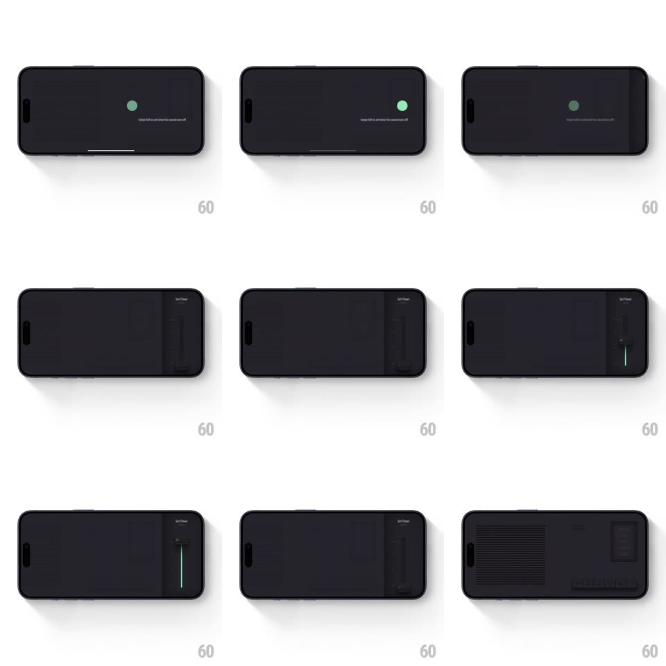

Media
Frame-by-frame

Rebuild this interaction 1:1: Lemo FM's swipe tooltip - a landscape radio interface where a small tooltip ("Swipe left to set timer for sound turn off") with a green pulsing dot appears; swiping slides a "Set Timer" panel in from the right edge with a tactile vertical slider, and dismissing glides back to the radio.

Rebuild this interaction 1:1: Lemo FM's swipe tooltip - a landscape radio interface where a small tooltip ("Swipe left to set timer for sound turn off") with a green pulsing dot appears; swiping slides a "Set Timer" panel in from the right edge with a tactile vertical slider, and dismissing glides back to the radio.
## Integration
Integration: stack-agnostic spec - springs given as stiffness/damping, timed motions as duration + curve; map every value to your framework and animation library of choice.
## Scene
Landscape, near-black radio UI: speaker grille texture filling the left two-thirds, dark screen module on the right. The tooltip is a tiny green dot + one line of microcopy floating right-of-center. The timer state replaces the right module with a "Set Timer" header and a vertical slider with a mint indicator line.
## Motion spec
Pattern: hint tooltip into edge-panel transition.
- Idle: the tooltip dot pulses (scale 1 -> 1.3 -> 1, opacity 1 -> 0.6, 1.4s loop); the copy sits beside it static.
- Swipe left: the tooltip fades/scatters (150ms) and the timer panel slides in from the right (spring ~340/26, 350ms), grille texture compressing slightly as the panel takes width.
- The vertical slider's indicator line stretches as you drag (mint line grows top-down, direct touch mapping), value label ticking beside it.
- Swipe right (or tap outside): the panel retracts on the same spring and the radio returns - the tooltip does not reappear once used.
## Calibration
- The panel is an extension of the right screen module - same width, same corner radius, so the swap reads as the module flipping function.
- The mint indicator is the only saturated element on the dark UI.
## Reduced motion
Panel crossfades in place (250ms).
## Don't miss
- The tooltip copy is set in very small lowercase type - a whisper, not a banner.
- The grille texture is a real repeating pattern that deforms subtly as the panel pushes in.